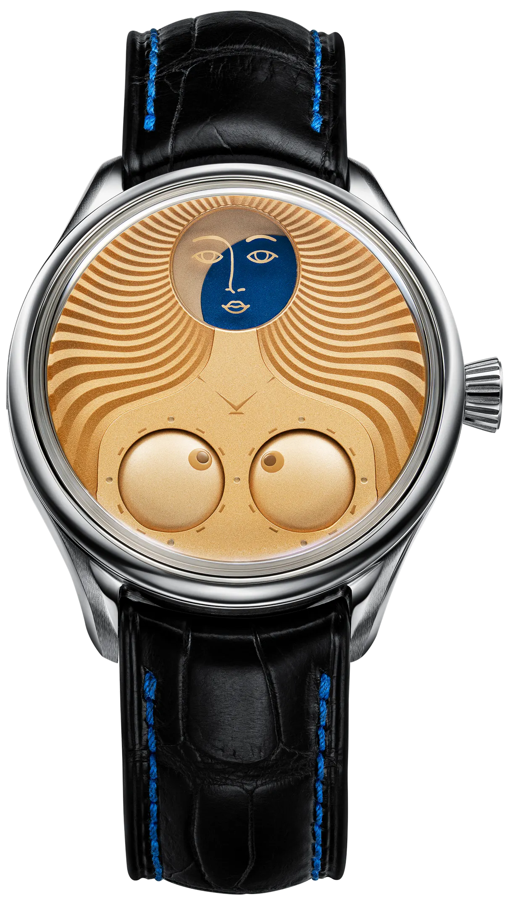
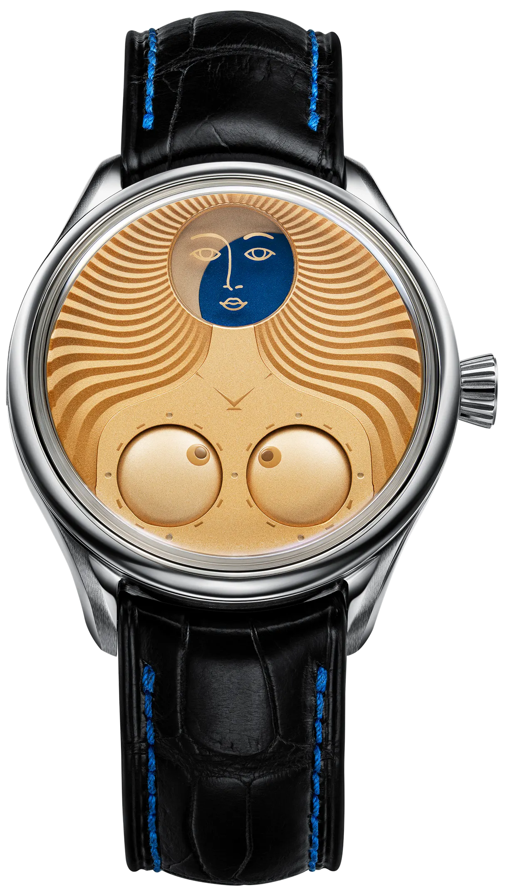

VENUS
ЛИМИТИРОВАННАЯ СЕРИЯ

Новая звезда
восходит на небосклон Вселенной ристмонов
“Венус” — символический образ Венеры, переложенный на язык фирменной джокер-индикации.
Идея подобных часов родилась у Константина Чайкина еще в 2018 году, вскоре после появления самого первого «Джокера» – «родоначальника» знаковой антропоморфной коллекции ристмонов.
Тогда мастер задумал модель «Матрешка», где центральной темой должен был стать женский персонаж, а ключевой деталью – запатентованный сферический указатель фазы Луны. Однако эта концепция так и не была воплощена в жизнь, оставшись у мастера в виде эскизов.
В июне 2023 года, пересматривая архивные наброски, Константин Чайкин вернулся к задумке, увидев в ней нереализованный потенциал.
Сохранив индикацию фаз Луны как ключевой элемент архитектуры часов, он сменил главную героиню: отправной точкой вдохновения стала Венера, в римской мифологии почитаемая как богиня любви, плодородия и процветания.
Так началась работа над ристмоном «Венус». Облик этих часов прежде всего вызывает ассоциации со знаменитым полотном Сандро Боттичелли «Рождение Венеры». Сюжет картины повествует о появлении богини из морской пены, запечатлевая момент, когда абстрактная идея красоты обретает форму.
Благодаря выразительности силуэта обнаженная фигура так и не обретает телесность, превращаясь в исток первозданной красоты.
Циферблат как
живописное
произведение

Циферблат «Венус» заметно отличается от большинства других ристмонов Константина Чайкина. Он выполнен в минималистичном ключе, за счет чего эмоциональное воздействие только усиливается.
В интерпретации мастера Венера в буквальном смысле становится луноликой. Указатель фазы Луны превращается в лицо, прописанное несколькими штрихами в духе Пабло Пикассо.
Двухцветные индикаторы по традиции отображают время: слева читаются часы, справа минуты. Женский силуэт заполняет все пространство циферблата, покрытого теплым оранжево-розовым лаком. В том же тоне решен фон лунного диска, тогда как лунная тень выполнена темно-синим цветом.
Лик богини нанесен с внутренней стороны сапфирового стекла. Волосы же «прорисованы» волнистым, расходящимся к краям, рельефным узором «гильоше». Завершающая деталь – логотип мануфактуры, трансформирующийся в подвеску на шее.
Чистые линии силуэта
луноликой Венеры
 

Еще одно заметное отличие от традиционного дизайна ристмонов – отсутствие второй корректирующей заводной головки: в «Венус» сохранилась только одна головка на отметке «три часа», что поддерживает цельность женственного силуэта на циферблате.
В автоматическом калибре K.18-25, которым оснащены часы «Венус», используется модифицированный механизм G200 швейцарской фабрики La Joux-Perret — он выбран за стабильность хода, надёжную конструкцию баланса и солидный 68-часовой запас хода. На его базе установлен полностью разработанный мануфактурой «Константин Чайкин» модуль джокер-индикации, выполненный по стандартам высокого часового искусства.

СПЕЦИФИКАЦИЯ
Лимитированная серия из 99 экземпляров. Выпущено совместно с официальным ритейлером в Италии – GMT Milano.
| Калибр | K.18-25 с автоматическим заводом |
| Модуль джокер-индикации | Производства мануфактуры «Константин Чайкин» |
| Базовый механизм | La Joux-Perret G200 швейцарского производства, модифицированный для мануфактуры «Константин Чайкин», диаметр 34,5 мм, толщина 7,9 мм (с модулем), 28’800 полуколебаний в час, 30 камней (базовый механизм – 24, модуль – 6), запас хода 68 часов |
| Функции | Художественный вариант джокер-индикации времени с дисковыми указателями часов, минут и фазы Луны |
| Корпус | Из нержавеющей стали, диаметр 40 мм, толщина 12,9 мм, задняя крышка с сапфировым окном прикреплена 6 винтами |
| Часовое стекло | Сапфировое стекло с просветляющим покрытием, диаметр 34,5 мм, сапфировое стекло задней крышки корпуса с просветляющим покрытием, диаметр 25,5 мм |
| Отделка циферблата | Абразивно-струйная обработка разных фракций, рельефный декор «гильоше», многослойное лаковое покрытие, прецизионная тампонная печать маркеров и логотипа, линза в апертуре указателя фазы Луны |
| Ремешок и застежка | Эксклюзивный из высококачественной кожи, с классической застежкой из нержавеющей стали производства мануфактуры «Константин Чайкин» |
ФОТОГАЛЕРЕЯ